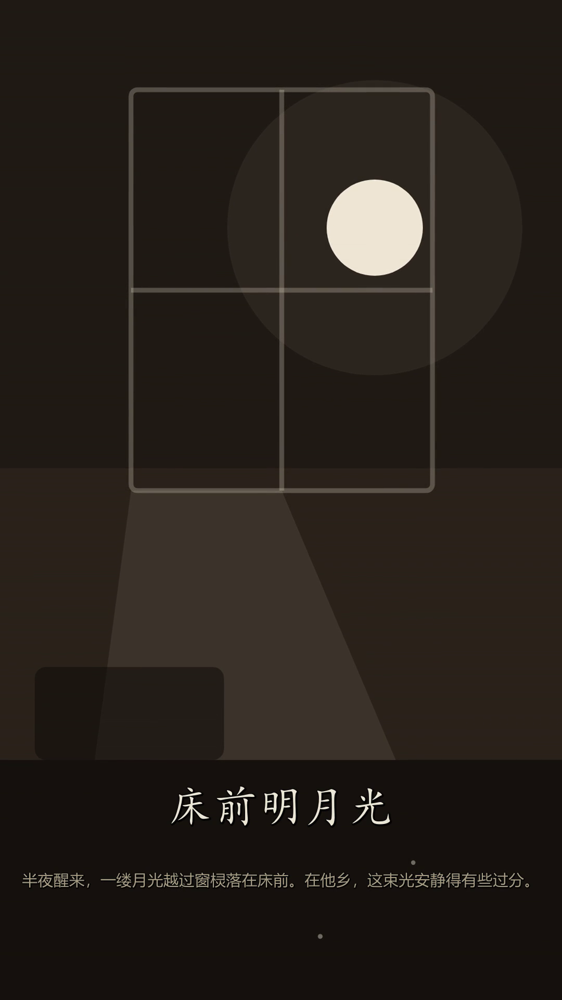
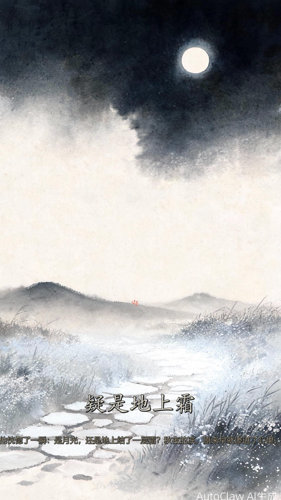
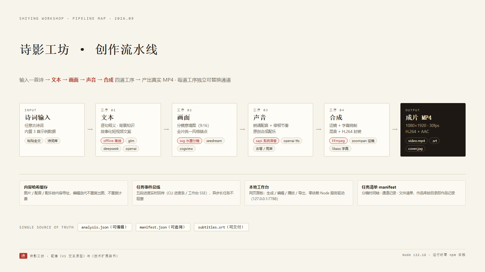
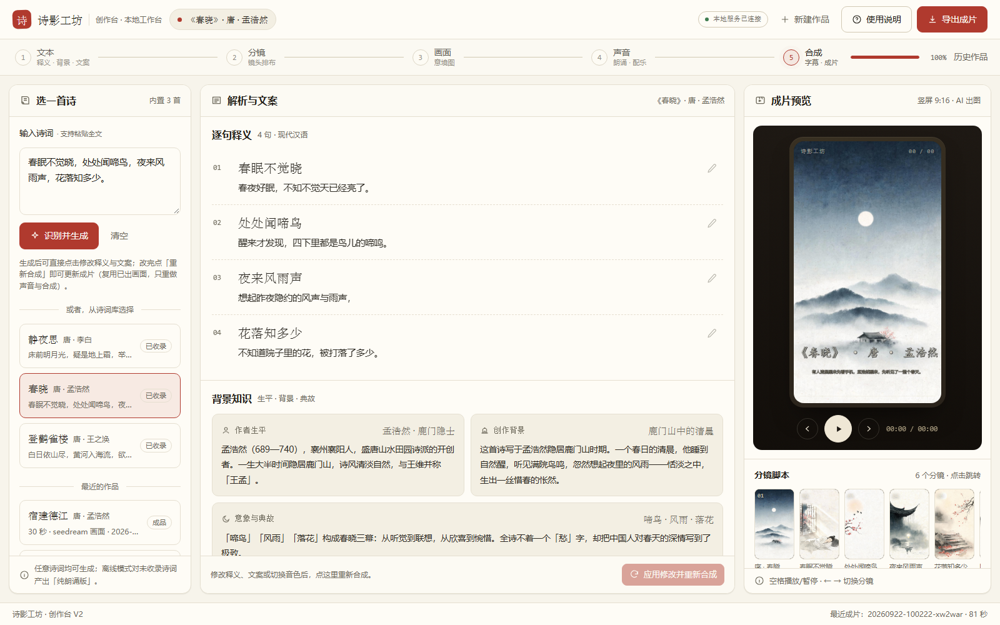

编程项目交付报告
从交互原型到能出片的创作流水线 —— 四道工序、四支成片，与一个跑在本机的工作台。
一句话：把「输入一首诗 → 出一支 MP4」从演示做成了真的
路书的第一步「跑通闭环」已经落地：一个名为 shiying-workshop 的 Node.js / TypeScript 项目。它把原型里的模拟流程逐段换成了真实能力 —— 真实解析、真实出图、真实配音、真实渲染，并且每一步都有可回看的产物与记录。页面模拟函数也已替换：V1 原型升级为 创作台 V2，由本地服务驱动，播放的是真实成片。
| 交付件 | 在哪 | 说明 |
|---|---|---|
| 创作流水线项目 | shiying-workshop/ | 文本 → 画面 → 声音 → 合成 四道工序，CLI 一键出片；Node ≥ 22.18 直接运行，无需安装依赖 |
| 本地工作台 V2 | npm run studio → 127.0.0.1:7788 | 网页面板：生成 / 编辑 / 播放 / 导出，真实接口驱动 |
| 成片 × 4 | output/job-*/ | 《静夜思》×2（水墨分镜版 / AI 真图版）· 《春晓》· 《宿建德江》 |
| 项目文档 | README.md · docs/ | 架构、通道、命令、限制与升级路线 |
屏幕上真的出现了成片 —— 闭环成立
验收标准只有一个：本地屏幕上出现第一支真实成片。它出现了，而且是连续四支 —— 两支《静夜思》（一支用离线的水墨分镜引擎，一支用 Seedream 出的真实 AI 意境图）、一支《春晓》（经工作台页面提交），以及一支未收录诗《宿建德江》（走了「任意诗词」的通用导演路径，产出纯朗诵版）。


| 成片 | 画面通道 | 时长 / 规格 | 产出方式与用时 |
|---|---|---|---|
| 《静夜思》水墨分镜版 | svg（离线引擎） | 81 秒 · 1080×1920 | CLI 全链路 167 秒；6 镜 × 2.4s/镜截图，含配音与合成 |
| 《静夜思》AI 真图版 | seedream | 81 秒 · 32.9MB | CLI 全链路 313 秒；6 张 AI 意境图（约 25s/张） |
| 《春晓》 | seedream | 81 秒 · 39.4MB | 经工作台 API 提交（POST /api/jobs → 轮询 → 完成），全链路 396 秒 |
| 《宿建德江》 | seedream | 30 秒 | 任意诗词路径（`--text`），离线结构解析 → 纯朗诵版，通用导演分配 6 镜 |
成片抽帧后用 AutoGLM 识图接口逐字核对：字幕中文渲染正确、无乱码无 tofu；画面内容与诗句意境对应（月光、窗棂、霜地）。视频规格经 ffprobe 核验（H.264 + AAC · 30fps · 81.07s）。
每一段都能换，换掉哪一段都还能出片

项目的组织方式完全跟着路书的流水线走：每道工序是一个独立模块（src/text.ts / image.ts / voice.ts / compose.ts），通道由配置切换 —— 离线兜底保证「随时能出完整成片」，真实服务随时可接。
- 文本 —— offline 内置数据 / 结构解析；接 glm 等大模型后为任意诗词生成释义、背景与故事文案（JSON 结构化输出，失败自动降级并提示）；句镜的旁白与画面主体取自「逐句释义」，开场与收尾为故事文案（2026-10 起）；并按情景判断诗中人物是否为同一人（如作者本人），必要时生成全片固定的角色形象设定（2026-10 起）。
- 画面 —— svg 水墨分镜引擎（16 个场景构建器，无头浏览器截图）／seedream 真实 AI 意境图（全片统一风格锚点；诗中人物为同一人时，固定形象逐字注入每一镜提示词，保证多镜人物一致）／cogview、openai 兼容通道。
- 声音 —— edge 神经语音（云健 / 晓晓 / 云扬，真人感强、适合古诗朗诵）／sapi 离线兑底／openai tts 兼容通道；停顿节奏用「分段合成 + 静音拼接」实现（诗句与旁白间 450ms、镜尾 750ms），配乐为程序合成的原创古琴 / 雨声。
- 合成 —— FFmpeg 单遍完成：逐镜运镜（zoompan 推拉/横移三种模式轮换）→ 拼接 → libass 烧制样式字幕（楷体大字 + 雅黑小字）→ 旁白混音 → H.264 faststart。
三个工程细节值得单独说：内容哈希缓存让重复运行免费 —— 图片按（通道+提示词+尺寸）、配音按（音色+语速+文本）寻址，编辑文案后重合成只重录改过的段落；任务事件总线让五段进度实时回传，CLI 里是进度条，工作台里是流程条，长渲染不再黑盒；人物一致性让「同一个诗人」在每一镜里是同一张脸——判定分内置精修与关键词推断两级兜底（可接大模型），出图时固定形象逐字复用，人物句「须出现」、写景句「如出现须一致」。
模拟函数换成了真实接口，播放的是真实成片
路书里「拿现有原型改造」这一步已完成：保留 V1 的全部设计系统（纸墨朱砂、三栏工作台、流程条），把演示逻辑替换为本地服务接口 —— 预览区播放的是 /media/ 下的真实 MP4，分镜缩略图是真实意境图，字幕可下载真实 .srt。生成采用先审后产的两段式：先出解析与文案供审核修改、定音色配乐，确认后才进入画面、声音与合成。

- 先审后产（两段式） —— 先生成解析与文案、审核修改并定好音色配乐，确认后才开始生图 / 配音 / 合成；避免把错字或偏好问题烧进重成本环节。
- 编辑重合成 —— 成片后改释义或文案，点「重新合成」：复用已出画面，只重做声音与合成（勾选「重新生成意境图」可忽略缓存全量重出），1-3 分钟出新片。
- 作品库 —— 磁盘上每个任务目录就是一条作品记录；历史成片随时回看，随时接着改。
- 视频拖动 —— 媒体分发支持 Range 请求（206），拖进度条、跳分镜都顺滑。
说「通过」之前，先给出证据
| 验证项 | 方法 | 结果 |
|---|---|---|
| 类型检查 | npm run typecheck（tsc --noEmit） | 0 错误（strict 模式） |
| 字幕渲染 | 成片抽帧 + 识图接口逐字核对 | ×3 帧全对：大字诗句 + 小字旁白，无乱码 |
| 视频规格 | ffprobe | 1080×1920 · 30fps · H.264 + AAC · faststart |
| 媒体分发 | HEAD / Range 请求实测 | 200 OK · 206 Partial Content（可拖动） |
| 断网可用性 | 离线通道全链路（不含 AI 出图） | 文本、配音、配乐、合成均本地完成 |
| 工作台页面 | 无头浏览器实机截图 + 识图核对 | 三栏全渲染，无报错、无空白、无重叠 |
开发中捕获并修复的问题（留痕）
- 无头浏览器并发档案冲突 —— 两路截图共用同档案目录导致进程退出；改为串行 + 独立档案。
- 截图为异步落盘 —— 启动器进程先退出、图片后写入；改为轮询等待文件稳定再判定成功（不迷信退出码）。
- 媒体接口重复写头 —— Range 分支在前一次 writeHead 之后再次写头导致崩溃；改为判定前置、单次写头，顺带支持 HEAD。
- 通用导演末句场景重复 —— 末句与首句同类型时「错开守卫」失效，两镜共用一张图；修复分配逻辑并重跑该片验证。
- 配乐默认值语义混淆 —— synth 是合成方式而非曲目，修正默认曲目为古琴并兼容旧配置。
① cogview / openai 兼容通道按公开文档实现、未在本机实测（缺 Key）；② Seedream 通道产图右下角带「AutoClaw AI生成」水印（默认保留，提供裁切选项）；③ 离线模式下未收录诗为纯朗诵版（接大模型后自动升级为完整版）；④ 渲染速度：1080×1920 全片约 2-3 分钟（CPU 软编）。
三行命令，从体检到出片
运行环境：Node ≥ 22.18（原生直跑 TypeScript，无需构建）、FFmpeg、任一 Chromium 内核浏览器（离线出图用）、Windows 系统语音（离线配音用）。需要接入大模型或云端通道时，复制 .env.example 为 .env 填 Key 即可。
闭环在手，接下来是质感和产品化
跑通闭环 本册完成
输入任意诗词产出真实 MP4：意境图 + 运镜、系统音色配音、代码化合成、本地工作台、内容缓存与任务事件。
提升质感
关键分镜换图生视频（可灵/即梦/Vidu —— 只需在 src/image.ts 增加一个 provider）；SSML 节奏脚本精调；字幕样式模板化；统一调色。
产品化
账号与作品库（Supabase / 微信云开发）；任务队列与重试；对象存储（OSS / R2）；发布半自动流。现有 manifest 结构与任务目录可直接迁移。